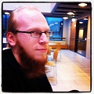
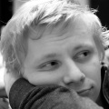

Pidämme kurssin funktionaalisesta ohjelmoinnista Clojure-ohjelmointikielellä.
Clojure on nuorehko Lispin sukuinen ohjelmointikieli, joka tarjoaa funktionaalisen lähestymistavan ohjelmointiin JVM-alustalla.
Kurssilla oletetaan ohjelmoinnin perustaidot Javalla. Funktionaalisen ohjelmoinnin ei tarvitse olla ennestään tuttua.
Kurssi alkaa johdatuksella Clojuren käyttöön ja syntaksiin. Kurssin tavoitteena on opettaa oikeiden ohjelmakokonaisuuksien kirjoittamista Clojurella.
Kurssi on viikon mittainen. Opetus keskittyy harjoitusten ja ohjelmien tekemiseen.
Kurssin materiaali on englanniksi.
 Juhana Laurinharju is a research assistant at the department of Computer Science at the University of Helsinki. He likes beards.
 Ilmari Vacklin is a software engineer at Eficode. He likes cats.
We’re giving a course on functional programming with Clojure.
Clojure is a young Lispish programming language. It is a functional programming language on the JVM platform. Because it runs on the JVM, all Clojure programs can use the standard and third-party Java libraries freely.
You should have basic Java programming skills. No prior experience with functional programming is required.
The course starts with an introduction to Clojure; its syntax and running it. After the introduction, we’ll concentrate specifically on writing whole programs.
The course is one week long with a focus on workshop sessions. The course material is in English.
Juhana Laurinharju is a research assistant at the department of Computer Science at the University of Helsinki. He likes beards.
Ilmari Vacklin is a software engineer at Eficode. He likes cats.